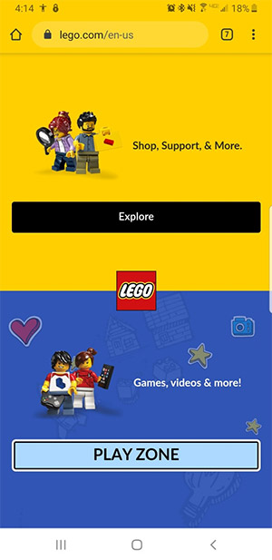

Contrast
Lego
This website useing the design princeple of contrast very nicely. They have two sections on this page, one for one for shopping and one for games. These sections have been divided by two contrasting background colors that make it clear that they are seperate. This site also used contrastin their call to action buttons. In the shopping section there is a standard "explore" button. Whereas in the play section there is a light fun "play zone" button that will catch any kids attention as soon as they see the page.
Visual Hierarchy
Barns & Nobel
Barns and Nobel uses visual hierarchy to draw your attention into the website with their first advertisment, they use brightly colored book over a white background catching your eye. Then the next thing that my eyes were brought to is the membership advertisment banner above it. Lastley my eyes were brought to the navigation banner and advertisments at the top of the screan.
White Space and Clean Design
The Church of Jesus Christ of Latter-day Saints

This website uses white space to create a clean well organized website. The simplisity of this site alows for the message of the website to shine through.